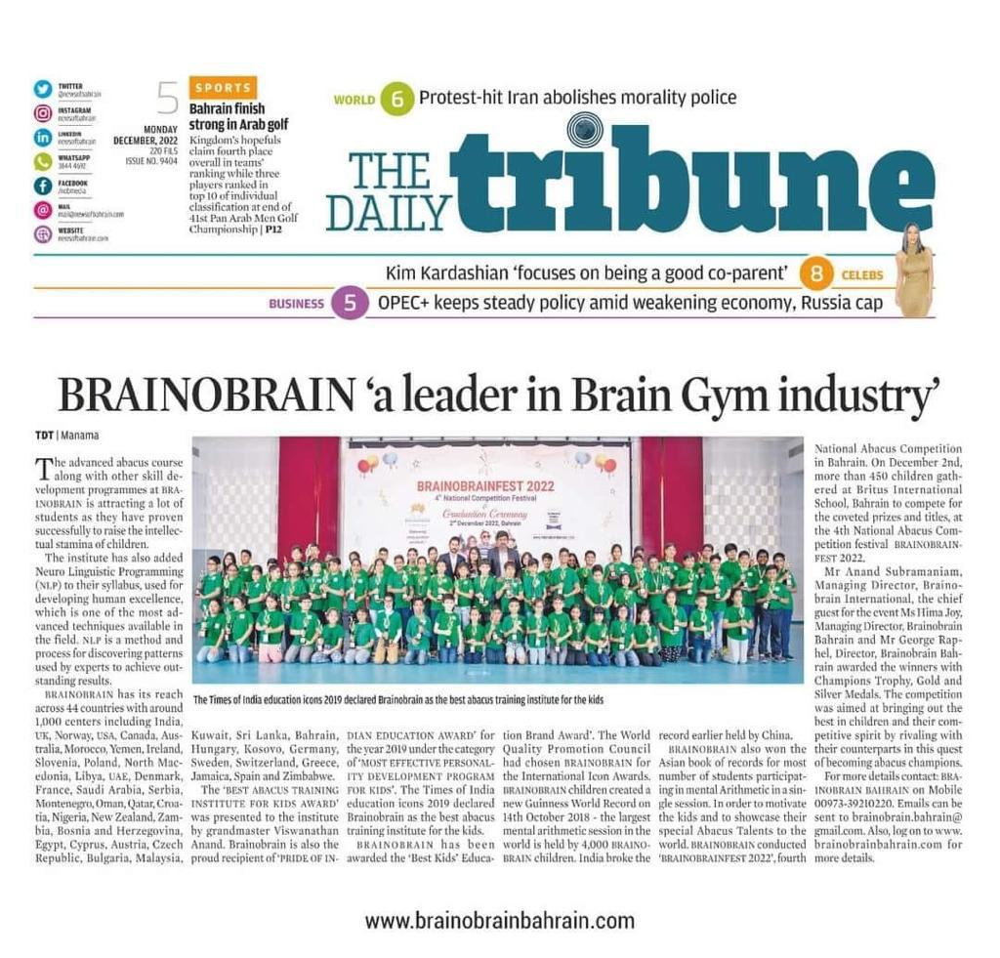

What is BrainOBrain?
BrainOBrain is an extra-curricular activity. I teach mathematics and it's effective tricks on an abacus. An abacus is a Chinese instrument used for calculating. Using it and regular practice makes it faster than a calculator!!!. So, we teach them tricks that make them faster than a calculator. By the way, it is an indian company started in Chennai.
We not only teach mathematics , but we also organise an interschool commpetion for all children. In this competion, children have to do mental maths, logical abilty, General Knowledge and Speed handwriting in only 40mins!. We also organise other competions on different levels like-State levle, National level, International level.
How and why it was started ?
BrainoBrain was establishd in 2003 in Chennai. It was made and established beacuse of shaping of the new world. By teaching them mathematics.
By the example of this video ,all the brainobrain students can do fast calculations. We don't only teach them but, we also take their examinations in each level to check that each and every student is doing good or not.
Here are some passed out students(Have completed their course in brainobrain) and their parent's reveiws. ↓
Student's Review
-
I am Gorav Pandey of class 5 studying at Guru Kripa Divine Grace Public School Bahraich recently completed Level 10 of BrainOBrain Course,embarking on the BrainOBrain Course with the guidance of the incredible Reena Ma'am has been a truly enlightening experience. As I recently completed this transformative course, I am eager to share the remarkable journey it has taken me on. The Beginning of My BrainOBrain Adventure: From the very first day, I sensed that BrainOBrain was unlike any other educational program I had encountered before. It was not just about numbers and calculations; it was about unlocking the full potential of the human mind. Unlocking Mental Arithmetic Mastery: Under the patient and skillful guidance of Reena Ma'am, I delved into the world of mental arithmetic.
-
I am Madhav Argrwal of class 5 studying in Guru Kripa Divine Grace Public School. I joined BrainOBrain in class 1. I was too bad at math at that time, but after joining BrainOBrain I am very fast in doing calculations. When joining in class 1, I only completed this course till level 4 then Covid came. After that when I gone BrainOBrain again I found my classmate Gorav Pandey there in my level. We both were best at math in our class. Before teacher solves the question we knew the answer it correctly. Now, I am in class 5 and I feel very proud and my mathematics is also improved lot.
BrainOBrain is a skill based program that teaches us math tricks, improve General knowledge, improve vocabulary and also improves conversation in English.
I love BRAINOBRAIN
Parent's Reviews
-
I am mother of Gorav Pandey. BrainOBrain is a fantastic course, it enhances concentration power, memory and multitasking skill of a child.
I suggest it for every child as it boosts up a child’s capability in academics
-
When we enrolled our child in Brainobrain, we were intrigued by the promises of cognitive development and academic improvement. Little did we know just how profoundly this course would impact our child's life. Reena Ma'am: A Guiding Light: From the very first interaction with Reena Ma'am, we knew that our child was in capable hands.
Faculty's Review
I feel proud to be a teacher at BrainOBrain.Because, it is giving opportunity to grow children's skills. I feel so proud when my students win trophies in different competitions
I am thankful to BrainOBrain to give me this golden opportunity.